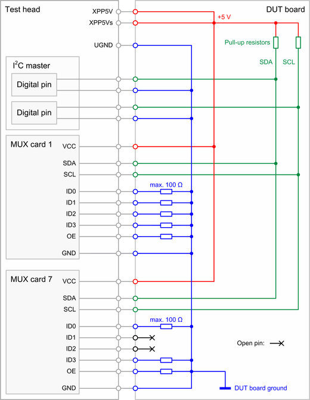

PMUX01 control pins
The control pins of the PMUX01 Power MUX card provide the I2C interface, an enable function, and addressing of the card.
SDA and SCL
The SDA pin and the SCL pin provide the I2C interface of the card. SCL is the serial clock line of the I2C bus. SDA is the serial data line of the I2C bus. The two pins should be connected to digital pins or utility pins to create the required I2C signals and protocol. Pull-up resistors of some hundred ohms to some kilo-ohms are required on the DUT board. The pull-up resistors should be connected to the same supply as the VCC pins of the card. Refer to the tables and the circuit diagram below for more information regarding the pull-up resistors.
OE
Output enable pin of the card. Connect this pin to UGND to enable the card or leave open to disable the card.
A disabled card is still connected to the power supply and can be programmed but all switches are open. New settings are applied in parallel to all switches of a disabled card as soon as the OE pin is tied to UGND.
ID0 to ID3
These are the addressing pins of the card. One of sixteen addresses can be selected. Connect to UGND or leave open according to the PMUX01 addressing scheme.
JTAG and P2V5
These pins are reserved. Do not connect on the DUT board.
Typical values, recommended operating conditions and maximum ratings
| Pin | Parameter | Value and unit |
|---|---|---|
| SDA and SCL | Pull-up resistance | 500 Ω ... 10 kΩ |
| Recommended total pull-up resistance for the Fast-mode Plus (Fm+) with a bit rate up to 1 Mbit/s | 500 Ω for each SDA and SCL line | |
| Capacitive load | A small capacitive load in the range from 30 pF to 1 nF may be required. | |
| Termination | Pull-up resistance as defined above. No termination for the digital pins. |
|
| Clamp | No clamp levels for the digital pins. | |
| VIH | 5.0 V | |
| VIH min (typical)1) | 2.0 V | |
| VIL max (typical)1) | 0.5 V | |
| VIL | 0.0 V | |
| SDA2) | VOL | 2.2 V |
| VOH | 2.5 V |
| Pin | Parameter | Value and unit |
|---|---|---|
| SDA and SCL | Maximum voltage | VVCC + 0.5 V |
| Minimum voltage | VGND - 0.5 V | |
| OE ID0 to ID3 |
Maximum voltage | 2.5 V |
| Minimum voltage | VGND - 0.5 V |
Application note
- Pull up resistor and output impedance of the digital pin
- When setting the voltage levels of the digital control pins, you must consider the output impedance of the digital drivers. The combination of the pull-up resistor and the output impedance of the digital drivers will form a voltage divider.
Example

The example circuit diagram above shows one I2C master with two MUX cards. The I2C master is a combination of two digital pins. The two MUX Cards are permanently enabled and set to the addresses 1 and 7 as defined in the PMUX01 addressing scheme. Supply voltage and pins are marked red. The ground connections and the related connections of the ID pins are marked blue. The I2C bus lines and the required pull-up resistors are marked green.
Functional changes
- Introduced in SmarTest 7.3.2 / 8.1.2